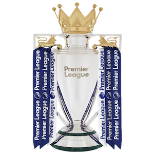
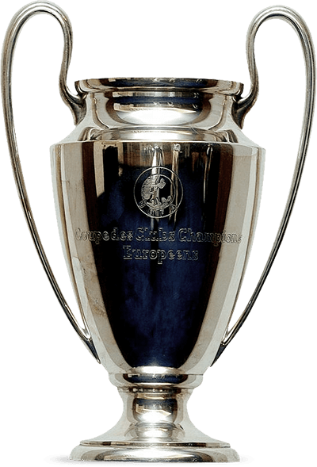
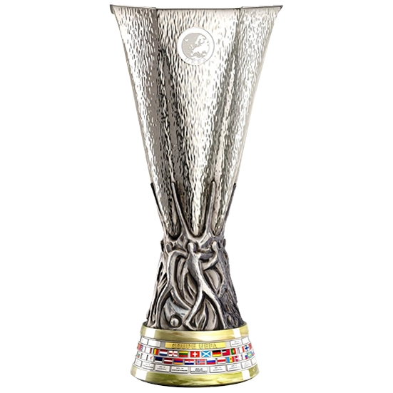
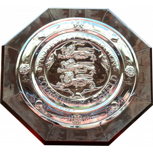

| Campeão da Inglaterra (19 vezes) | |
|---|---|
|  | 19/20, 89/90, 87/88, 85/86, 83/84, 82/83, 81/82, 79/80, 78/79, 76/77, 75/76, 72/73, 65/66, 63/64, 46/47, 1922/23, 1921/22, 1905/06, 1900/01 |
| Mundial de Clubes da FIFA (1 vez) | |
|---|---|
 |
19/20 |
| Liga dos Campeões (6 vezes) | |
|---|---|
|  | 18/19, 04/05, 83/84, 80/81, 77/78, 76/77 |
| Europa League (3 vezes) | |
|---|---|
|  | 00/01, 75/76, 72/73 |
| FA Cup (8 vezes) | |
|---|---|
 |
21/22, 05/06, 00/01, 91/92, 88/89, 85/86, 73/74, 64/65 |
| Taça da Liga Inglesa (9 vezes) | |
|---|---|
 |
21/22, 11/12, 02/03, 00/01, 94/95, 83/84, 82/83, 81/82, 80/81 |
| Supercopa da UEFA (4 vezes) | |
|---|---|
 |
19/20, 05/06, 01/02, 77/78 |
| Supercopa da Inglaterra (15 vezes) | |
|---|---|
|  | 06/07, 01/02, 90/91, 89/90, 88/89, 86/87, 82/83, 80/81, 79/80, 77/78, 76/77, 74/75, 66/67, 65/66, 64/65 |
| English 2nd tier champion (1 vezes) | |
|---|---|
| 61/62, 1904/05, 1895/96, 1893/94 | |